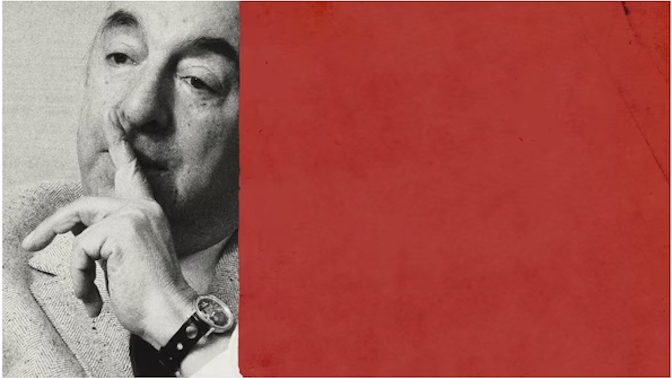
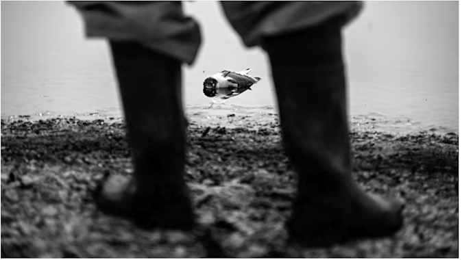
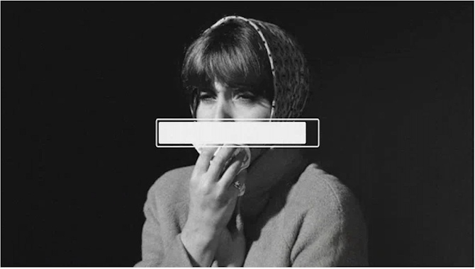

GETTY IMAGES
Who poisoned Pablo Neruda
A new report suggests what some have long suspected: One of the world's most famous poets may have been
murdered.
Ariel Doreman

GETTY IMAGES
Eagles Are Falling, Bears Are Going Blind
Bird flu is already a tradegy.
Katherine J. Wu
GETTY IMAGES
The airtight Case Against Internet Pile-Ons
Whether or not they're famous (or blameless), people deserve accurate depictions in the media.
Conor Friedersdorf

GETTY IMAGES
What Not to Ask Me About My Long COVID
A brief Guide
Jennifer Senior